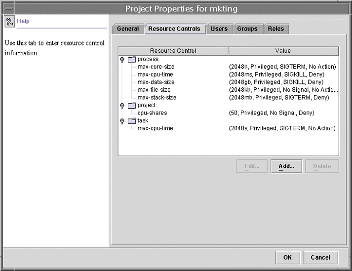

|
||||||||||||||||||||||||||||||||||
|
Solaris Virtualization Product Overview 1. Introduction to Solaris Resource Management 2. Projects and Tasks (Overview) 3. Administering Projects and Tasks 4. Extended Accounting (Overview) 5. Administering Extended Accounting (Tasks) 6. Resource Controls (Overview) 7. Administering Resource Controls (Tasks) 8. Fair Share Scheduler (Overview) 9. Administering the Fair Share Scheduler (Tasks) 10. Physical Memory Control Using the Resource Capping Daemon (Overview) 11. Administering the Resource Capping Daemon (Tasks) 13. Creating and Administering Resource Pools (Tasks) 14. Resource Management Configuration Example 15. Resource Control Functionality in the Solaris Management Console How to Access the Performance Tool 16. Introduction to Solaris Zones 17. Non-Global Zone Configuration (Overview) 18. Planning and Configuring Non-Global Zones (Tasks) 19. About Installing, Halting, Cloning, and Uninstalling Non-Global Zones (Overview) 20. Installing, Booting, Halting, Uninstalling, and Cloning Non-Global Zones (Tasks) 21. Non-Global Zone Login (Overview) 22. Logging In to Non-Global Zones (Tasks) 23. Moving and Migrating Non-Global Zones (Tasks) 24. About Packages and Patches on a Solaris System With Zones Installed (Overview) 25. Adding and Removing Packages and Patches on a Solaris System With Zones Installed (Tasks) 26. Solaris Zones Administration (Overview) 27. Administering Solaris Zones (Tasks) 28. Troubleshooting Miscellaneous Solaris Zones Problems 29. About Branded Zones and the Linux Branded Zone 30. Planning the lx Branded Zone Configuration (Overview) 31. Configuring the lx Branded Zone (Tasks) 32. About Installing, Booting, Halting, Cloning, and Uninstalling lx Branded Zones (Overview) 33. Installing, Booting, Halting, Uninstalling and Cloning lx Branded Zones (Tasks) 34. Logging In to lx Branded Zones (Tasks) 35. Moving and Migrating lx Branded Zones (Tasks) 36. Administering and Running Applications in lx Branded Zones (Tasks) 37. Sun xVM Hypervisor System Requirements 38. Booting and Running the Sun xVM Hypervisor 40. Using virt-install to Install a Domain |
Resource Controls TabResource controls allow you to associate a project with a set of resource constraints. These constraints determine the allowable resource usage of tasks and processes that run in the context of the project. Figure 15-2 Resource Controls Tab in the Solaris Management ConsoleHow to Access the Resource Controls TabThe Resource Controls tab is located under System Configuration in the Navigation pane. To access Resource Controls, do the following:
Resource Controls You Can SetThe following table shows the resource controls that can be set in the console. The table describes the resource that is constrained by each control. The table also identifies the default units that are used by the project database for that resource. The default units are of two types:
Thus, project.cpu-shares specifies the number of shares to which the project is entitled. process.max-file-descriptor specifies the highest file number that can be assigned to a process by the open(2) system call. Table 15-1 Standard Resource Controls Available in the Solaris Management Console
Setting ValuesYou can view, add, edit, or delete resource control values for processes, projects, and tasks. These operations are performed through dialog boxes in the console. Resource controls and values are viewed in tables in the console. The Resource Control column lists the resource controls that can be set. The Value column displays the properties that are associated with each resource control. In the table, these values are enclosed in parentheses, and they appear as plain text separated by commas. The values in parentheses comprise an “action clause.” Each action clause is composed of a threshold, a privilege level, one signal, and one local action that is associated with the particular threshold. Each resource control can have multiple action clauses, which are also separated by commas. Note - On a running system, values that are altered in the project database through the console only take effect for new tasks that are started in a project. |
|||||||||||||||||||||||||||||||||
|